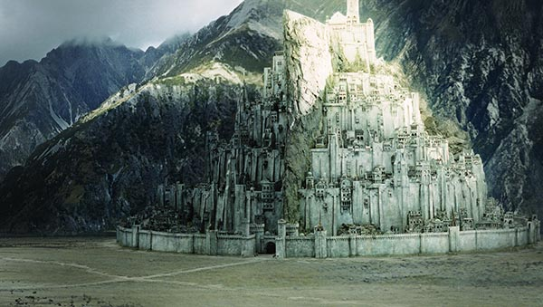

Карта средиземья

К карте
Все элементы
Минас Тирит
Изначально называлась Минас Анор (синд. Minas Anor — «Крепость Солнца») и вместе с Минас Итилем являлась одной из двух крепостей, прикрывавших Осгилиат с Востока и Запада.
Дата начала строительства неизвестна.

Во 2 году Третьей Эпохи Исилдур перенёс в город росток Белого Древа в память о погибшем во время войны Последнего Союза брате.
В 1640 году Т. Э. после эпидемии чумы в Осгилиате и гибели всех его жителей (включая короля) крепость становится столицей Гондора.
В 2698 году Т. Э. Минас Анор был переименован в Минас Тирит (синд. — «Крепость стражи») в знак противостояния Мордору и захваченной врагом крепости Минас Моргул.
В 3019 году Т. Э. Минас Тирит был осажден силами Мордора и его союзников: Харада, Кханда и прочих. Осада завершилась кровопролитной битвой на Пеленнорских полях, в которой победу одержали армии Гондора и Рохана.
После коронации короля Элессара городу было возвращено прежнее название — Минас Анор.
Минас Тирит выстроен на скале, являющейся отрогом горы Миндоллуин. Крепость располагалась на семи террасах, каждая из которых примыкала к склону горы, и у каждой была своя стена с воротами. Главные ворота, выкованные из стали (после штурма Минас Тирита в ходе Войны Кольца они были уничтожены Королём-чародеем и впоследствии заменены мифриловыми), защищённые бастионами и барбаканом из нуменорского камня в нижнем кольце открывались точно на восток. Ворота второго кольца стен были сдвинуты к югу, третьего — к северу, и так до самого верха; поэтому мощёная дорога шла зигзагами. Наверху скалу окружала висячая галерея: из этого гнезда защитники крепости могли следить за воротами, лежащими на 700 футов ниже.
Из галереи прямой, освещённый светильниками ход вёл к седьмым воротам. За ними располагался Верхний двор, знаменитый водоём с фонтаном и Белая башня, построенная в 1900 году Т.Э. (перестроена в 2698 году Т.Э.), в которой хранился палантир. От стяга Наместников на её шпиле до уровня равнины Пеленнора была полная тысяча футов.
Имея защитников, способных носить оружие, Минас Тирит был неприступен для любой армии. Минас Тирит был настолько хорошо укреплён, что лишь вмешательство Предводителя назгулов позволило врагам разрушить ворота. Но Король-Чародей не успел прорваться дальше Великих врат, вынужденный отступить в связи с началом атаки рохиррим в решающий момент битвы на Пеленнорских Полях.